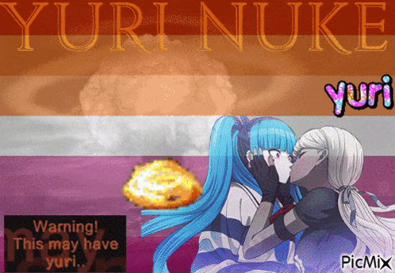

who the fuck are you
well there's no need to swear. i'm izzy, aka izzythewikiwitch, izzymandias, and sometimes weatzel if you like pornography.
about me:
- linguist artist writer poet
- bri'ish and annoyingly transgender
- creating teldrani for @thesojourn.bsky.social; astrilish for @thestarsaredestiny.com
- she/her but they/them if you're mad at me
- i enjoy yuri and make my entire life about it tbh
- i fucking love lancer and the gay mechs therein
- you're automatically gay by reading this. haha get bungled faggot
more than anything, i'm sick of the internet enough to make my own website. things are looking bad. to be chalant for a moment; the world is terrifying and i wanted to create a space for myself that will literally need to be melted down and destroyed before it stops existing. the only thing this place relies on is myself (and github tbh but there will always be alternatives). if you like gay people or trans people or yuri. keep an eye here.
just for reading all that, have a gif-t.
it's like gift but- you get it.